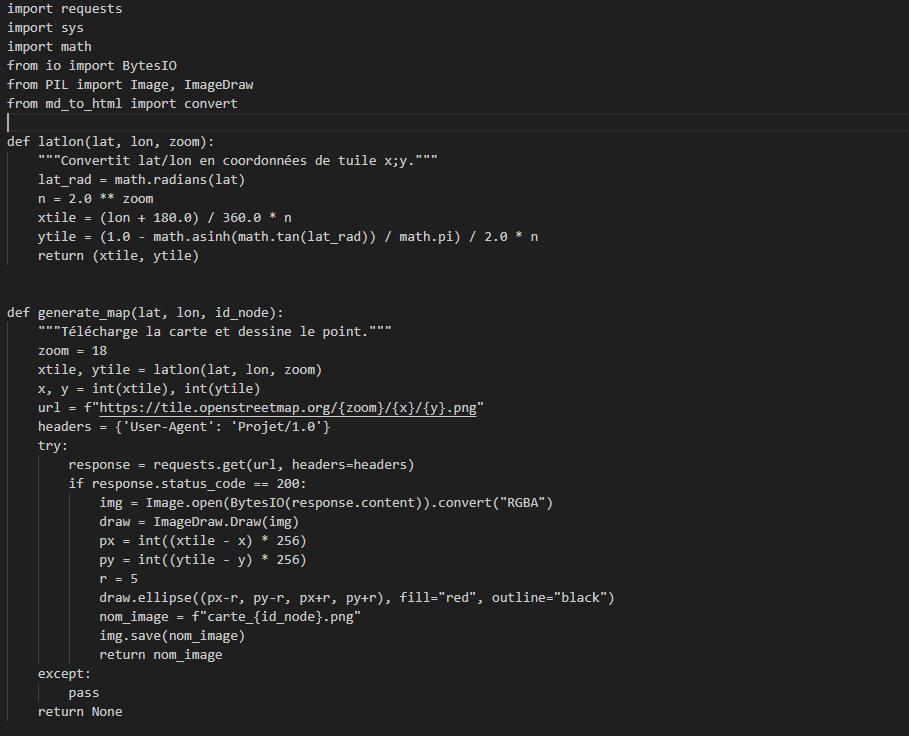

SAÉ 1.05 – Traiter des données
1. Contexte et Objectifs de la mission
Contexte professionnel : Un professionnel R&T est régulièrement amené à manipuler des données brutes issues du système d'information (logs, état des équipements). Ces traitements, souvent récurrents, gagnent à être automatisés via des scripts.
Mission confiée : L'objectif de ce projet de développement en Python était de récolter des données géographiques via une API REST en ligne (OpenStreetMap), de les traiter (conversion, parsing JSON), d'en extraire des informations utiles, puis de générer automatiquement un rapport au format Markdown (converti en HTML).
Compétences BUT ciblées : RT3 - Créer des outils et des applications informatiques pour les R&T.
2. Apprentissages Critiques (AC) mobilisés
Au cours de ce projet de programmation, j'ai particulièrement mis en œuvre les apprentissages suivants :
- AC 13.02 : Lire, exécuter, corriger et modifier un programme.
→ Comment je l'ai mobilisé : En écrivant des fonctions Python complexes pour interroger des serveurs distants, en gérant les erreurs de connexion (blocs try/except) et en manipulant des images. - AC 13.05 : Choisir les mécanismes de gestion de données adaptés au développement de l’outil.
→ Comment je l'ai mobilisé : En comprenant et en exploitant le format de données JSON retourné par l'API, qui est beaucoup plus structuré et manipulable informatiquement qu'un texte brut.
3. Tâches réalisées et Méthodologie
Le développement s'est déroulé en plusieurs phases logiques :
- Requêtage HTTP : Utilisation de la bibliothèque
requestsen Python pour envoyer des requêtes GET à l'API OpenStreetMap et récupérer les données brutes. - Traitement mathématique : Création de fonctions pour convertir des coordonnées GPS (latitude/longitude) en coordonnées de "tuiles" cartographiques (X/Y) via des formules trigonométriques.
- Génération visuelle : Utilisation de la bibliothèque
PIL(Pillow) pour télécharger l'image de la carte depuis le serveur et dessiner dynamiquement un repère (point rouge) aux coordonnées calculées. - Exportation : Automatisation de la création d'un document récapitulatif en Markdown (.md).
4. Preuves et Traces de réalisation
Trace 1 : Script Python de traitement géographique (API OSM)
Description : Extrait de mon code Python montrant les fonctions de conversion mathématique et de génération d'image à partir des données de l'API.

Justification du choix : J'ai choisi cet extrait de code car il illustre parfaitement ma capacité à faire communiquer mon script avec une application tierce (requête HTTP GET). On y voit également ma gestion des codes statuts HTTP (if response.status_code == 200:) et ma maîtrise des bibliothèques externes (PIL, requests, math).
5. Autoévaluation et Démarche Réflexive
Difficultés rencontrées & Solutions apportées
L'une des principales difficultés a été la conversion des coordonnées GPS en pixels précis sur l'image téléchargée. Les mathématiques derrière la projection de Mercator utilisée par OpenStreetMap n'étaient pas triviales. Pour surmonter cela, j'ai procédé par itération : j'ai d'abord testé mon code avec des coordonnées connues très simples avant d'appliquer la formule math.asinh(math.tan(lat_rad)), et j'ai encapsulé le téléchargement dans un bloc try/except pour éviter que le programme ne plante si le serveur ne répondait pas.
Prise de recul (Bilan)
Cette SAÉ m'a fait faire un bond en avant dans ma compréhension de l'architecture du Web. Avant, je voyais le code comme un outil fonctionnant en vase clos. Désormais, j'ai compris comment les API REST permettent à différents systèmes de se parler de manière universelle grâce au format JSON. C'est une compétence d'automatisation extrêmement puissante.
Capacité d'adaptation
Comprendre les API REST et le JSON est une base absolue pour mon futur en cybersécurité ou en administration réseau. Par exemple, je pourrai réutiliser ces exactes mêmes compétences en Python pour interroger automatiquement l'API d'un pare-feu Cisco (via RESTCONF) pour vérifier ses règles de sécurité, ou pour scripter des requêtes automatisées vers l'API de Shodan lors d'une recherche de vulnérabilités (OSINT).